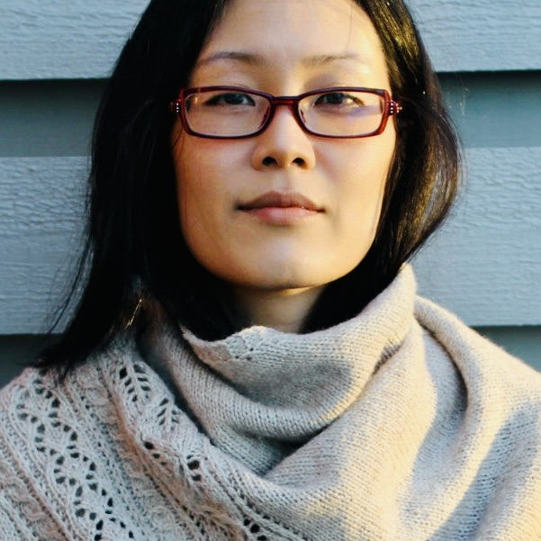

About Me

I’m a Canadian who now lives in Norway by way of the United States, Switzerland, and the Netherlands. I love knitting lace, writing short stories, and baking cakes, all of which I realise renders me a stereotypical female of the human species. In my defence, I dislike makeup and fashion. “Your mother wears army boots” is hardly an insult given my vast and well-worn collection of Doc Martens.
The last book that I read was Crypt by Alice Roberts; my favourite book is The Golden Compass by Philip Pullman. My brother once suggested that I put “easily trainable” on my CV -- a description that makes me sound like an overly enthusiastic dog, although it remains a fact that in recent years I have taught myself to read German cursive (Kurrentschrift) as well as Swedish. My research interests are broad and although World War I is my preferred topic, I’m currently working on a review of literature about strategies to increase collective efficacy in multiethnic neighbourhoods.
I like data-driven solutions but hate New Public Management, and if I had to describe myself in one phrase it would be: “mutters a lot into the online void about dragons, yarn, and prisoners of war.”
Ravelry: lanechka
Instagram: tynn_traad
Substack: Jagged Lines
© Lanja Khon-Engheim, 2024